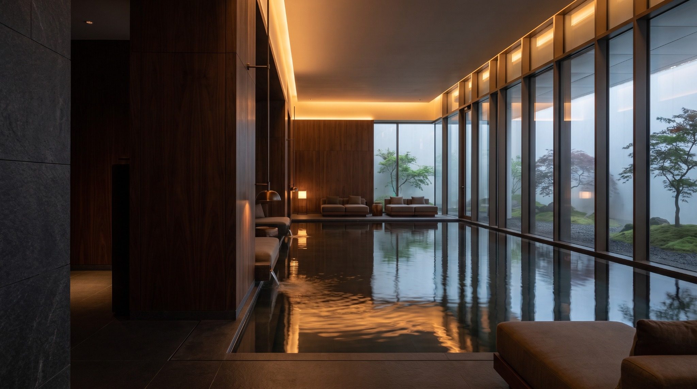
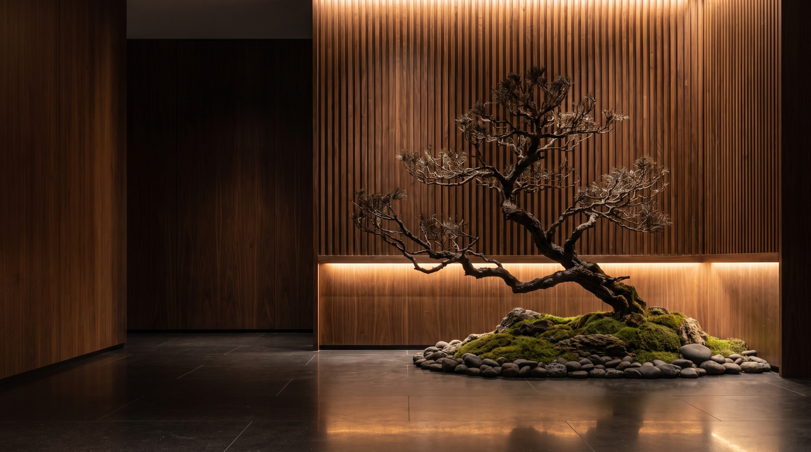
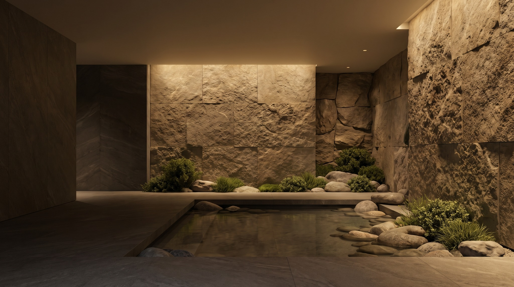
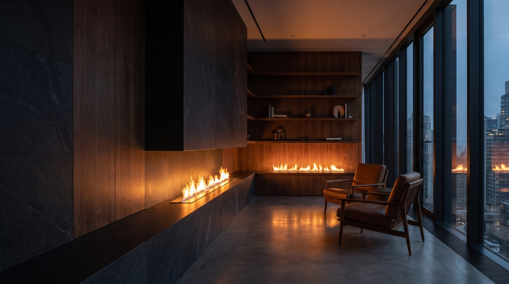
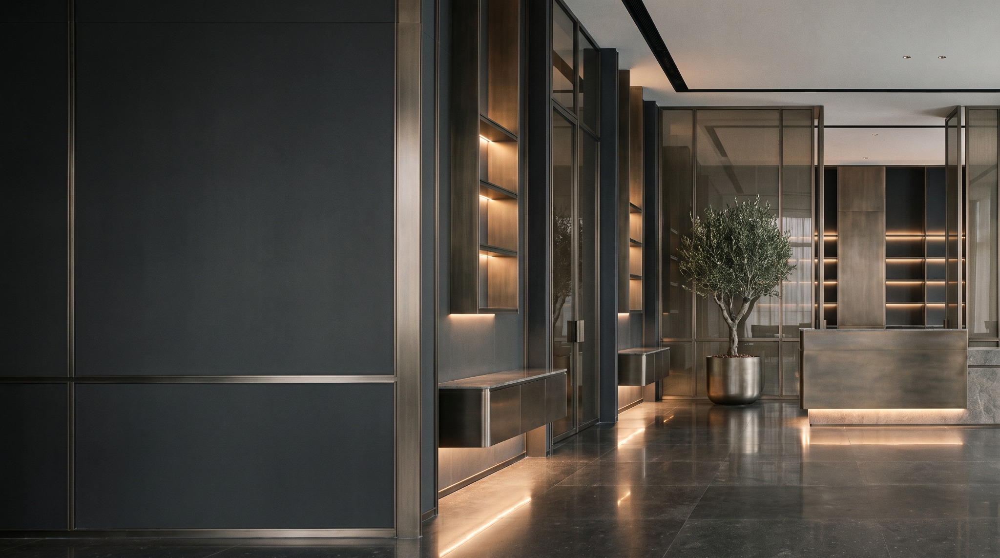
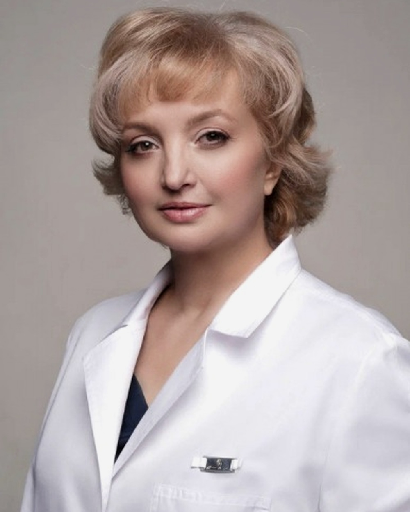
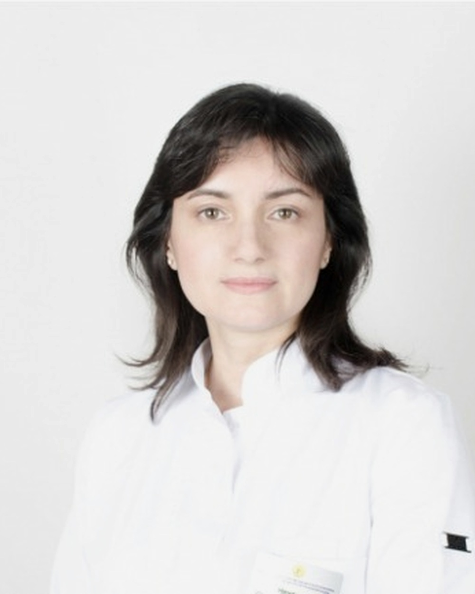
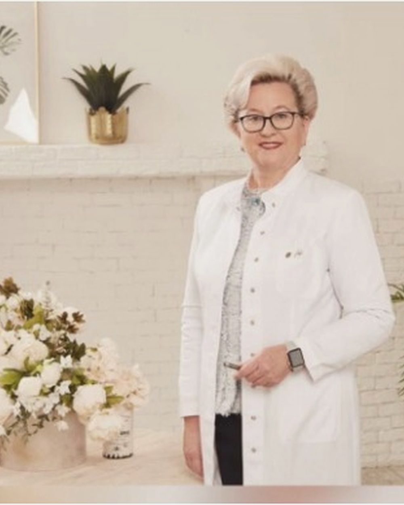
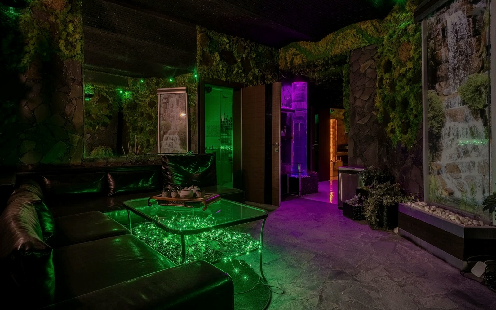

Диагностика
Понять состояние и определить отправную точку.

 ИТВМ
Записаться
ИТВМ
Записаться
Многопрофильная медицинская клиника на Арбате
Пять элементов — визуальная метафора маршрута пациента: от понимания состояния до точной персональной системы лечения.
Понять состояние и определить отправную точку.

Вернуть ресурс и запустить процессы восстановления.

Создать стабильную основу для дальнейшего лечения.

Вернуть энергию и поддержать внутренние ресурсы.

Выстроить назначения, процедуры и контроль результата.


Главный врач, к.м.н., доцент
ИТВМ
Врач венеролог-дерматолог высшей категории, д.м.н.
ИТВМ
Врач гинеколог-репродуктолог высшей категории, д.м.н., профессор
ИТВМКонсультации врачей и специалистов разных медицинских направлений.
Открыть список →Воздействие на биологически активные точки.
Методы воздействия на рефлекторные зоны организма.
Работа с функциональными нарушениями и мягкими тканями.
Традиционная массажная техника восточной медицины.
Метод лечения с применением медицинских пиявок по показаниям.
Локальное воздействие на мягкие ткани пониженным давлением.
Термальный курорт и ингаляционное отделение в центре Москвы — отдельное пространство восстановления внутри клиники.
Реальные интерьеры ИТВМ — часть общей системы: медицинские кабинеты, зоны ожидания и пространства восстановления.



Филипповский переулок, 18
м. Арбатская
Пять элементов — один персональный маршрут лечения.